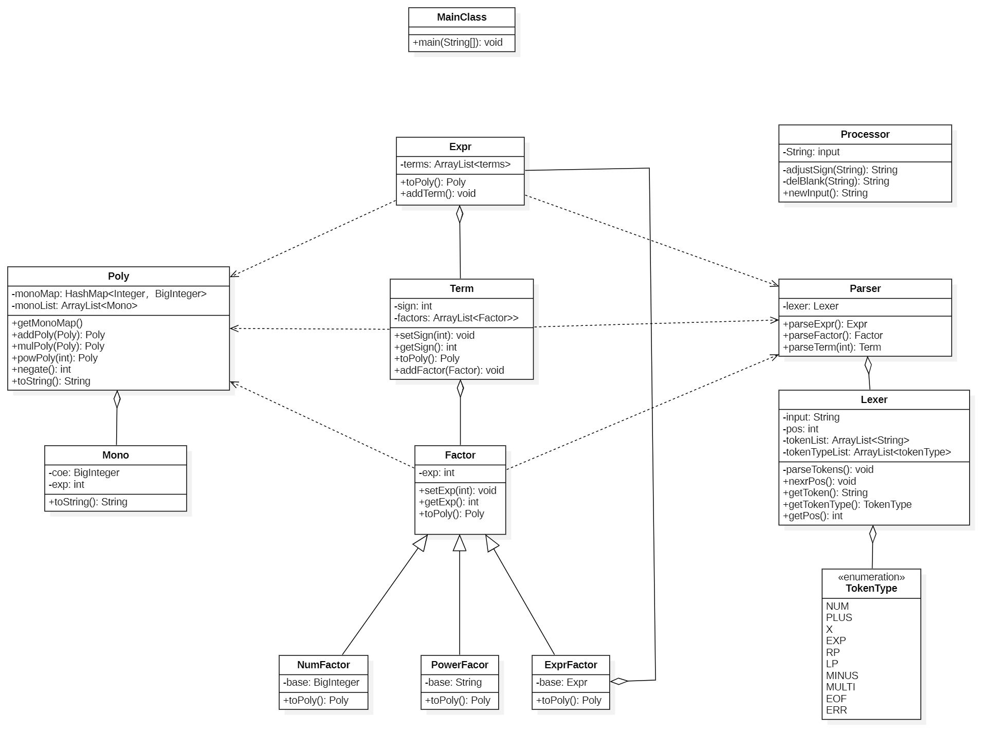
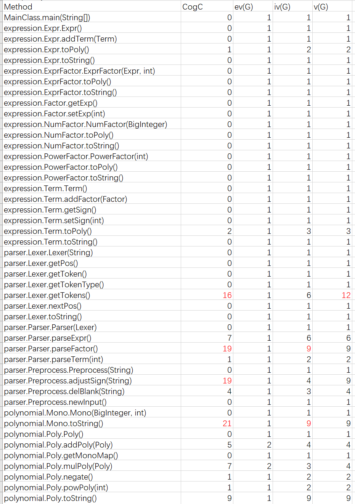
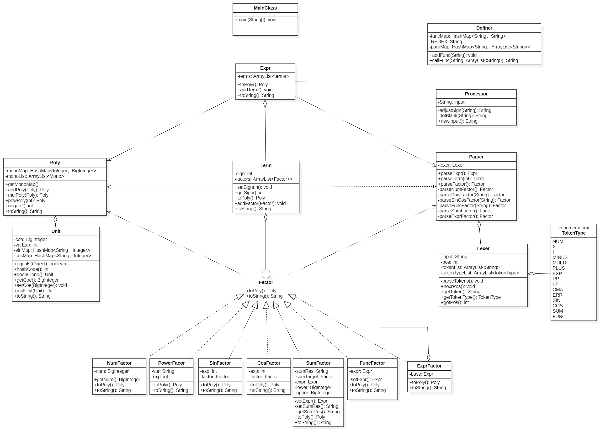
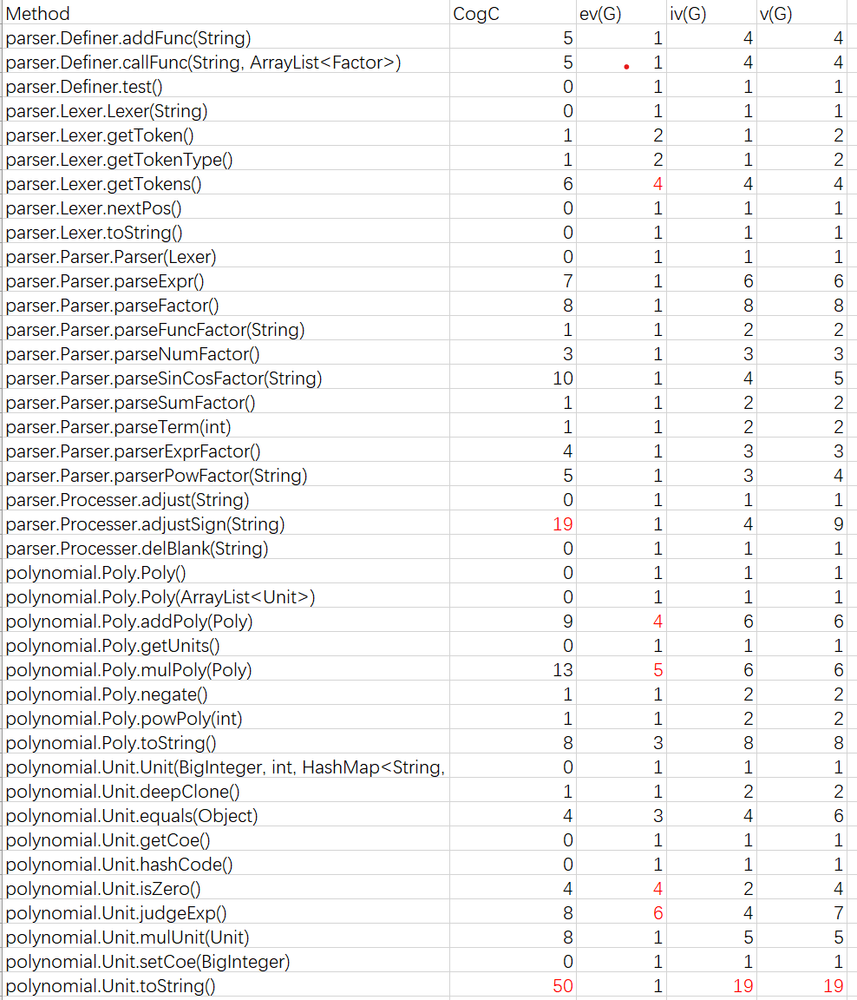
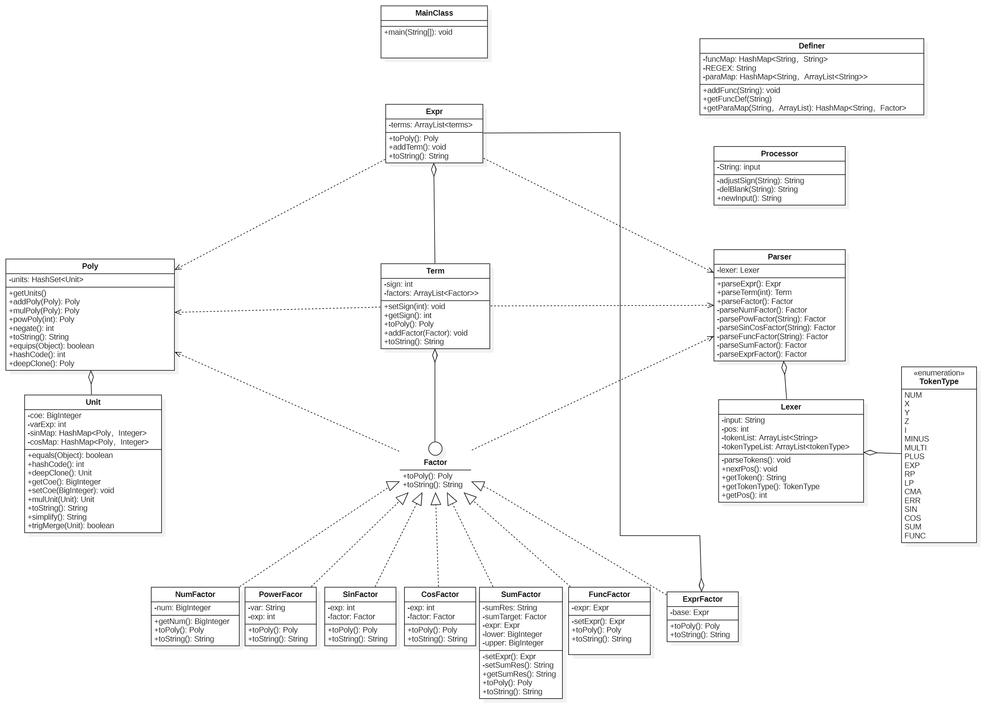
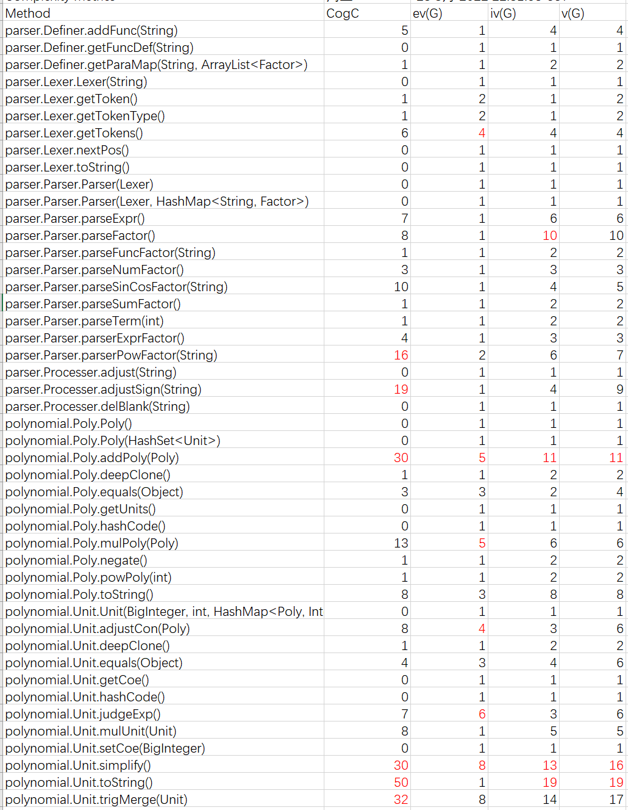
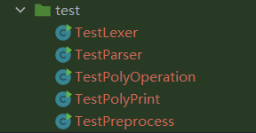
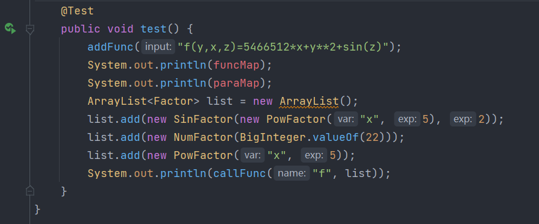

前言
第一单元的主题是表达式括号展开，主要的学习目标是熟悉面向对象的思想，学会使用类来管理对象，掌握一定的模块化设计能力。本单元一共有三次作业——单变量多项式展开，含有三角函数、求和函数和自定义函数的多项式展开，含有多层嵌套的表达式展开。
可以看出，这三次作业的要求是一步步递进的，代码的复杂度也同样大大递增。就好像是一个喋喋不休的甲方每周都会定时给你提一堆“变态”的要求，而你又无法拒绝……不过好在经过一个月的挣扎，第一单元终于落下了帷幕，借着这篇博客，我将对三次作业的代码进行详细分析，并对本人的学习心得和体会进行总结。
第一次作业分析
第一次作业主要是关于单变量多项式的展开，这次我们需要展开的表达式中项只有三种——幂函数，常数因子和表达式因子。
代码UML类图
本次作业代码的UML类图如下所示

代码架构分析
简单分析本次作业的要求后我们不难发现，我们表达式主要包含三部分——Expr，Term，Factor，而Factor又有三种——幂函数，常数因子和表达式因子，基于面向对象的思想，我们要对这些类型分别建类。其中Expr类中使用ArrayList来容纳该表达式中含有的Term，Term类中使用ArrayList来容纳该项中含有的Factor。
建类仅仅是第一步，此外我们还面临两个问题——
- 如何将表达式、项和因子解析出来？
- 如何将表达式进行展开?
表达式解析：递归下降算法
第一个问题主要有两种解决方式——一个是使用正则表达式进行字符串的解构，另一个是往届学长大力推荐的递归下降算法。曾有学长说——“使用正则表达式后给后面的作业带来意想不到的bug”，于是我就果断选择了后者。
递归下降算法听上去高深莫测，但是在课程组开放的训练题中一番接触后，感觉其实也不是很复杂。它主要包含了两个部分——Lexer（词法分析器）和Paser（解析器）。
Lexer主要是将表达式分解成一系列基本语法单元，而Parser主要是根据表达式的形式化定义，依靠Lexer分解出的语法单元(token)，递归的生成表达式、项和因子。
Lexer
在本次作业中，表达式的基本语法单元的类型有 NUM, X, MULTI, MINUS, EXP, PLUS, LP, RP，我们将这些语法单元的类型用TokenType这一枚举类型来记录。
1 | public enum TokenType { |
因为本作业语法单元比较简单，我们可以 直接用for循环来遍历字符串， 然后用switch-case来对语法单元进行分析，将分析出来的语法单元及其类型分别放入Lexer类中的tokenList和tokenTypeList——
1 | switch (c) { |
这样我们就把表达式中所有语法单元都解析出来了，下面就该到Parser发挥作用了
Parser
Parser类的设计主要是沿用了本单元练习题中的写法，将表达式的解析分成了三部分——parseExpr, parseTerm, parseFactor，每一部分的解析都遵循形式化文法。
以parseExpr为例，因为第一项之前可能带有符号，于是我们就先将符号（+或者-）解析出来，然后解析第1项。解析完第1项后，我们就可以直接使用while循环对后面的项依次进行解析。需要注意的是，解析项实际上就调用一次parseFactor()方法.代码如下——
1 | public Expr parseExpr() { |
表达式展开
经过分析，本次作业中表达式展开的最终结果其实是一个多项式的形式——
可以发现，多项式中含有一系列的单项式，每个单项式都是这种形式。于是我们不难想到，我们可以再建立两个类——Poly（多项式类）和Mono（单项式类）。
-
Mono类含有两个成员变量——coe和exp，分别代表系数和x的指数。然后还有toString()方法，将Mono转化成 “coe*x**exp” 这种形式1
2
3
4
5//Mono.java
private BigInteger coe;
private int exp;
//...
public String toStirng() {...} -
Poly类有一个ArrayList容器，用来容纳一系列Mono，此外还有addPoly()，mulPoly()和powPoly()等方法来实现多项式的运算,最后有toString()方法将每个Mono的字符串形式链接起来，形成表达式字符串1
2
3
4
5
6
7
8//Poly.java
private ArrayList<Mono> monoList;
//.....
public Poly addPoly(Poly other) {...}
public Poly mulPoly(Poly other) {...}
public Poly powPoly(Poly other) {...}
public String toStirng() {...}
这样之后，我们就可以在Expr、Term、Factor等类中都写一个toPoly()方法，将类中的内容转化为多项式。然后从factor.toPoly()一步步向上转化，那么最终可以通过expr.toPoly()来获得结果。具体的转化过程如下——
-
numFactor(数字因子)和powerFactor（幂函数因子）的toPoly方法很简单，直接转化为 只含有一个Mono的Poly即可。例如，因子5可以转化为一个只含有单项式5*x**0的多项式，因子x**2一个只含有单项式1*x**2的多项式。 -
Term类的toPoly()方法是：将该类中含有的所有Factor的Poly形式（即toPoly()的结果）用mulPoly()方法乘起来。1
2
3
4
5
6
7
8
9
10
11
12//Term.java
public Poly toPoly() {
//....
for (Factor it : factors) {
Poly temp = poly.mulPoly(it.toPoly());
poly = temp;
}
if (sign == -1) {
poly.negate();
}
return poly;
}注意一个细节，因为项是有符号的，如果该项整体是负的，我们需要把
Poly中所有的单项式的系数取反，这个取反操作我们是通过Poly类中定义的negate()方法实现的。 -
Expr类的toPoly()方法是：将其含有的所有Term的Poly形式（即toPoly()的结果）用addPoly()方法加起来。1
2
3
4
5
6
7
8
9//Expr.java
public Poly toPoly() {
Poly poly = new Poly();
for (Term it : terms) {
Poly temp = poly.addPoly(it.toPoly());
poly = temp;
}
return poly;
} -
对于
exprFactor，因为其包含一个Expr类型的“底”和一个int类型的指数，我们可以通过expr.toPoly()得到 ”底”的多项式形式，然后使用powPoly()方法展开。1
2
3
4
5//exprFactor.java
public Poly toPoly() {
Poly poly = base.toPoly().powPoly(this.getExp());
return poly;
}
这样，我们就可以通过在每个类中定义的toPoly()方法自底向上地得到表达式的多项式形式。最后，我们再通过Poly中的toString()方法就可以获得最终展开后的结果。
其他细节
- 表达式预处理： 我们设置了一个表达式预处理类
Processer，预处理的内容包括——将表达式中空白符删去、将连续的±号合并成一个。 - 关于优化：
- 如果单项式系数为
0，则最终结果为0, - 如果单项式系数为
1，则可以省略系数，简化为 - 如果单项式系数为
-1，则可以省略系数，简化为 - 如果单项式x的指数为
0，则最终结果只输出系数 - 如果单项式x的指数为
1，则指数部分可以省略,简化为 - 如果单项式x的指数为
2,则x**2可以化简为x*x
- 如果单项式系数为
代码复杂度分析
Method Metrics

从代码复杂度分析数据可以看到，大多数方法的复杂度在合理范围之内，而有四个方法复杂度超标.
-
Lexer类中的getTokens()方法使用了switch-case对表达式的语法单元进行解析。由于使用了switch的语法结构，因此结构非常冗杂，导致代码量暴增。
在作业2中，我采用了正则表达式来进行优化 -
再
Parser类中的parseFactor()方法里，我们需要先判断当前解析的因子是什么类型的（数字因子？幂函数因子？表达式因子？）然后再根据因子的类型分别进行解析，这样也导致了代码复杂度较高。在作业2中，我为每一种因子的解析都单独封装了一个方法，然后在
parseFactor()中调用这些方法。这样既可以减少parseFactor()方法的复杂度，也提高了代码可读性。 -
Mono类中toString()方法在生成单项式的字符串形式时，需要针对对每一种特定的情况进行优化，免不了使用大量的if-else语句进行特判，复杂度高也在所难免。
第二次作业分析
第二次作业在第一次的基础上增加了三角函数因子，求和函数因子和自定义函数因子，复杂度进一步提高。
代码UML类图
本次作业代码的UML类图如下所示

代码架构分析
第一次作业到第二次作业的跨度比较大，但是递归下降方法可以继续沿用，只需要增加几种语法单元即可（包括SIN,COS,FUNC,SUM,CMA[逗号]）。本次作业的困难之处主要有以下几点——
- 三角函数如何解析？
- 如何解析求和函数
sum(i, 求和下界, 求和上界, 求和表达式)？如何将i的值带入到求和因子factor中？ - 如何解析自定义函数
[fgh](x,y,z)? 如何将实参带入到函数定义式中? - 在本次作业我们不能使用作为多项式
Poly的最小组成单元，那么我们该用什么?
三角函数的解析
首先我们可以新建了一个sinFactor类和cosFactor类（其实也可以合并成一个类），类中有两个成员变量——factor(表示三角函数括号内的因子)，exp(表示三角函数的指数部分)
1 | //sinFactor.java |
为解析三角函数，我们在parser类中设置了一个parserSinCosFactor()方法，该方法在parseFactor()中被调用。解析逻辑是，当我们在parseFactor()中发现当前解析的因子为sin或者cos时，我们就可以调用parserSinCosFactor()方法，先将三角函数括号内的因子进行解析（即在该方法中再调用parseFactor()方法），然后解析该三角函数的指数，最后将解析结果保存到一个SinFactor对象或者CosFactor对象中返回即可。
1 | //Paser.java |
求和函数的解析
首先，我新建了一个SumFactor类，成员变量有——upper,lower,sumTarget,sumRes,expr，用于封装求和函数对象
1 | //SumFactor.java |
为解析求和函数，我们在parser类中设置了一个parserSumFactor()方法，解析逻辑是，先将求和函数的上界和下界解析出来，然后解析最后的求和因子（同样是调用parseFactor()方法），最后将解析结果保存到一个SumFactor对象中返回。
1 | //Paser.java |
“将结果保存到一个SumFactor对象”实际上是调用了一个该类的构造函数，在这个构造函数中我们还做了进一步处理——
1 | //SumFactor.java |
这里我们调用了两个函数——setSumRes()和setExpr()，这两个函数都是定义在该文件中的private方法
setSumRes()方法主要是根据lower和upper将求和函数展开成字符串，主要采用的是字符串替换的方法——使用for循环让i从lower遍历到upper，然后将i的值代入的求和目标sumTarget的字符串形式这时你可能会疑惑，求和目标
sumTarget是Factor类型，怎么获得字符串形式呢???
实际上，在这次作业中我给每一个数据类都重写了toString()方法，非递归的Factor类型(如数字因子，幂函数因子)可以直接变为字符串形式，Term的toString()是将其含有的所有Factor的字符串形式用"*“连接起来，而Expr的toString()是将其含有的所有Term的字符串形式用”+"连接起来即可。setExpr()实际上将字符串形式的求和结果sumRes使用Lexer和Paser进行解析，然后返回解析出来的Expr对象。
至此，求和函数解析告一段落。
自定义函数的定义和解析
首先，我新建了一个FuncFactor类，成员变量有——newFunc和expr，用于封装自定义函数类型的对象
1 | //FuncFactor.java |
为了便于自定义函数的定义和解析，我还新建了一个工具类Definer,主要处理自定义函数的定义和调用。该函数的成员和方法都是静态的，意味着我们不需要实例化对象，直接通过类名即可调用。
- 该函数有两个主要的私有静态成员
funcMap和paraMap,两者都是HashMap类型，前者可以通过函数名（f/g/h）来获得函数的定义式，后者可以通过函数名来获得该函数的形参列表（x/y/z）。1
2
3//Definer.java
private static HashMap<String, String> funcMap = new HashMap<>();
private static HashMap<String, ArrayList<String>> paraMap = new HashMap<>(); - 该类有两个主要函数——
addFunc()和callFunc()，看名字就大概能猜出来他俩的功能。1
2
3//Definer.java
public static void addFunc(String input) {}
public static String callFunc(String name, ArrayList<Factor> actualParas) {}- 前者是在函数调用时使用，将终端输入的函数表达式传入该函数并进行解析（主要通过正则表达式），并将该函数的定义式和形参列表分别加入
funcMap和paraMap。 - 后者是在函数调用时使用（更准确的说是在自定义函数解析的时候使用的），传入的参量是函数名
name和实参列表acturalParas。
该函数的逻辑是——首先根据name获得函数定义式和行参列表，根据形参列表和实参列表的对应关系建立一个映射map。然后遍历一遍字符串，根据映射关系将函数定义式中的形参替换成 实参的字符串形式(实参传入时是Factor类型,直接调用其toString()方法即可)
- 前者是在函数调用时使用，将终端输入的函数表达式传入该函数并进行解析（主要通过正则表达式），并将该函数的定义式和形参列表分别加入
有了工具类Definer提供的buff加成，我们接下来就可以轻松的进行自定义函数的解析了。
首先还是先在parser类中设置了一个parseFuncFactor()方法，解析逻辑是先解析函数名，然后解析所有的实参（因为实参是Factor类型，因此还是直接调用parseFactor()），最后将结果封装在FuncFactor对象中返回即可
1 | //Parser.java |
此时我们只把函数名和实参解析出来，还没有对函数表达式进行解析。剩下的解析过程在FuncFactor类的构造方法中实现——
1 | //FuncFactor.java |
在构造函数中，我们通过工具类Definer中的callFunc()方法，获得了带入实参后的表达式的字符串形式newFunc，然后用本类中的私有方法setExpr()将newFunc解析成了Expr（同样需要使用Lexer和Paser)
至此，自定义函数的解析也圆满结束了。
表达式展开
将新加入的几种Factor解析完后，终于遇到了最难啃的一块骨头——表达式展开。我的思路是继续沿用第一次作业中Mono和Poly的形式，但是因为本次作业中多项式最小单元不是，而是变成了
这意味这我们在第一次作业中使用的Mono失效了，经过再三斟酌，我将Mono改称为Unit（表示最小单元），并对其数据组成进行了一定修改——
1 | //Unit.java |
coe和varExp都很好理解，sinMap和cosMap是用来存储这个最小单元的三角函数。Hashmap的key是三角函数括号里的表达式，value是三角函数指数
注意“三角函数括号里的表达式实”际上是
SinFactor（或者CosFactor）中的expr成员先转化为Poly，再转化成字符串得到的。也就是直接调用expr.toPoly().toString()获得的结果）不得不说这样确实很复杂，而且因为直接转化成了字符串，也不能对三角函数括号里的内容做任何修改，所在第三次作业中我直接改用
Poly作为sinMap和cosMap的键。
在Poly中，我们仍然使用一个ArrayList来存放它下属的各个Unit，因为Unit结构的改变, mulPoly(), addPoly(), powPoly()等函数的实现细节也需要进行一定的修改，此处不再赘述。但是需要注意的时，在上述函数中少不了合并同类项的步骤，为了识别同类项，我们需要在Unit中重写equals()和hashCode()方法。
注意equals()方法重写时，不需要比较coe。
这样再稍微调整一下各个数据类的toPoly()方法的实现，就可以得到最终的结果了。
代码复杂度分析
Method Metrics

由于方法太多，我们只截取了parser和polynomial包内的方法复杂度（其他包内的方法的复杂度均为合理范围之内）。
不难发现，这次复杂方法重灾区主要集中在Unit类和Poly类中，其中Unit.toStirng()方法的复杂度更是高达50!!!分析原因，主要是因为Unit类中增加了sin,cos等新的数据成员，导致在输出时判断逻辑更为复杂，同时也直接导致了Poly类中进行add和mul运算时进行的操作也更为复杂。
第三次作业分析
第三次作业允许“函数实参可以是函数”，“三角函数括号中可以有任意因子”等多层嵌套行为，表达式复杂度达到了顶峰。
代码UML类图
本次作业代码的UML类图如下所示

代码架构分析
由于我第二次作业中已经实现了多层嵌套的功能，因此这次作业挑战并不是很大，除了一些修修补补的工作，我主要把精力放在了结果的优化上——
- 二倍角优化：
- 平方和优化：
我在Unit类中重新增加了simply()方法和trigMerge()方法分别来实现上面两种优化，然后在Poly类的addPoly()和mulPoly()中调用这两种方法。
其实逻辑也很简单——
- 在两个
Poly相乘时，实际上就是两个Poly中任意两个Unit相乘后再相加，我们把两个Unit相乘后的结果用simply()方法进行简化。而simply()的逻辑就是在Unit的sinMap和cosMap中寻找可以进行二倍角合并的项进行合并。 - 在两个
Poly相加，实际上就是两个Poly中所有Unit相加，我们使用trigMerge()方法进行判断两个Unit是否可以进行平方和优化。trigMerge()方法的逻辑是，如果两个Unit分别有sin(expr)^2和cos(expr)^2，且其他的数据成员都一样，那么就将这两个Unit合并
虽然逻辑简单，但是实现后的代码还是十分复杂的）
代码复杂度分析
Method Metrics

果不其然，
simply()方法和trigMerge()方法的复杂度还是超标了，甚至simply()的圈复杂度、基本复杂度和模块设计复杂度均爆红，这是三角函数化简本身的复杂性导致的（因为需要增加很多特判条件）。而且，由于在Poly.addPoly()方法和Poly.mulPoly()方法中也调用了simply()和trigMerge()，所以这两个方法的复杂度和上次作业相比也更高
关于测试
单元测试
每当写完一个(或几个)可以实现特定功能的类后，我会先在test文件夹下新建一个测试类，然后对这个（或这些）类的功能进行测试。如果测试没有问题，再去实现其他功能。
例如，在写完Processer类后，我新建了一个TestProcesser类，用来测试字符串的预处理功能是否正常；在写完Lexer和Parser类之后，我会建立一个TestParser类，测试是否将Expr,Term和Factor等正确的解析出来……

这是以前用SprintBoot开发后端时养成的习惯，这样做可以尽早将一些不必要的bug定位出来，减轻后期整体测试时的工作量。
其实，除了新建测试类，也可以Junit进行单元测试，只需要在 “测试方法” 开头写上@Test注解即可，非常方便。例如，我在Definer类中写了一个test()方法来测试函数的定义和调用功能是否符合预期，如下图所示

整体测试
当我们将整个项目写完后，需要对其进行完整、系统的测试，以确定我们的设计是否符合要求，输出是否合法。我主要采用了自动化随机测试的方法进行整体测试。
自动化测试是我写了两个文件——generate.py和test.py
generate.py是用来构造测试数据的，构造逻辑和我们解析表达式的逻辑相似，同样是采用了 “递归下降” 的思想。其中三个关键函数是gener_E(),gener_T(),gener_F()，大体结构如下所示（以下非完整代码，只提供答题思路）
1 | def gener_E() : #生成Expr |
test.py主要用于测试，它首先运行generate.py来获取测试数据，然后运行我们的工程jar包（在IDEA中生成），将测试数据输入，获取化简后的结果。为了判断化简结果是否正确，我们可以使用sympy库进行判断。
1 | import sympy |
此外，我还想补充一下在一个python文件中运行其他代码文件(python、Cpp…)的方法
os.system(cmd)
这个函数以命令为参数，可以直接运行我们输入的命令，将命令返回的结果在终端中显示出来这个方法的缺点是无法直接获得命令运行后的结果，但是我们可以通过将运行结果重定向到文件来间接获得。1
os.system("python generate.py")
os.popen(cmd, mode)
我觉得这个函数是os.system()的升级版，他将命令的运行结果以文件的形式返回，然后我们就可以通过读文件的方法获得运行结果了1
2f = os.popen("python test.py", "r")
print(f.read())subprocess.run(args, input, stdout, stderr)
args实际上就是命令，只不过传入的是将命令的各个部分拆解后形成的列表（好像直接传入命令行字符串也是可以的orz），input是我们运行命令之后需要在终端输入的内容。以运行工程jar包为例——1
2
3
4
5cmd = ['java', '-jar', 'Unit1_HW3.jar']
data = "0\n" + "sin(x**2)**2 + cos(x**2)**2"
p = subprocess.run(cmd, input=data, stdout=subprocess.PIPE, stderr=subprocess.PIPE, encoding="UTF-8")
#也可以写 p = subprocess.run("java -jar Unit1_HW3.jar", input=data, stdout=subprocess.PIPE, stderr=subprocess.PIPE, encoding="UTF-8")
print(p.stdout) #输出化简后的结果
BUG分析
不幸的是，本人在第三次作业的强测和互测中出现了bug，主要是三角函数平方和优化引起的。
当输入的数据为——
1 | 0 |
本应该输出的是2,而我的输出确实是1, 主要原因是，我在优化的时候，每加一个项就判断一下是不是可以进行三角合并，并将最终加的结果保存在ArrayList中。根据我的优化方法，加到最后ArrayList中有两个1；但是当我将ArrayList直接转化为HashSet时，由于两个项都是1，最后HashSet中只保存了一个1。
这个bug出现在Poly类的addPoly()方法中，此方法长达50余行，复杂度更是到达了30, 这给我定位bug和修改bug带来了不小的困难。
这次惨痛的经历告诉我们——优化一定要慎重！！！
架构设计体验
在这三次作业中我并没有重构，主要得益于递归下降算法的天然优势和合理的需求预测。
首先，我并没有采用大正则来解析表达式，而是听从学长的建议果断选择了递归下降算法。这个算法在三次作业中都是适用的，我相信即使再增加因子类型，递归下降同样也可以解决。
其次，我在做每一次作业时，并不仅仅着眼于本次作业的要求，还对下次作业的要求进行一定预测，然后在coding的时候尽量关注代码的可扩展性，为下一次作业的迭代做好准备。
心得体会
- 多多关注讨论区。当某个地方陷入死局时，阅读一下同学的思路和分享也许会让你豁然开朗。
- 关注代码复杂度，尽量不要写太长的方法。即使不得不写，也要多加小心，因为很有可能有bug藏匿其中。
- 优化时要慎重，正确性一定要放在第一位。
- 注意测试的全面性。 在测试的时候不能只进行随机测试，还要针对我们做的优化多测几组特殊数据。
- 注意代码可扩展性。写代码时不仅仅要着眼于本次作业的要求，还需要思考下一次作业中可能会有哪些新的要求，为迭代开发做好准备。
If you like this blog or find it useful for you, you are welcome to comment on it. You are also welcome to share this blog, so that more people can participate in it. If the images used in the blog infringe your copyright, please contact the author to delete them. Thank you !